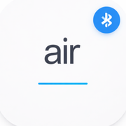

AirType
Type, scroll and click on your computer, Mac or TV from your iPhone.
Bluetooth (no extra software)
- Open AirType and tap Use Bluetooth.
- On your device, open its Bluetooth settings and choose AirType.
- Windows: Settings → Bluetooth & devices → Add device → Bluetooth → tap Show all devices → AirType
- Mac: System Settings → Bluetooth → AirType → Connect
- TV or tablet: open its Bluetooth settings → AirType
- Keep AirType open while pairing.
Some Bluetooth adapters (often small USB ones) cannot use a phone as a keyboard. If AirType does not connect, that device is not supported over Bluetooth. Use Wi-Fi mode instead.
Wi-Fi mode (Windows, optional)
Wi-Fi mode adds emoji, any language and screenshots. It needs the free AirType helper on your PC.
- Download and open the AirType helper on your PC:
Download AirType Helper for Windows Windows 10 or 11 · 9 MB · free - It installs itself and shows a small AirType icon next to the clock. It starts by itself when you sign in.
- Make sure your iPhone and PC are on the same Wi-Fi.
- In AirType, tap Find my PC, then click Yes on the PC to allow your phone.
If Windows shows "Windows protected your PC", click More info → Run anyway. If Windows asks whether AirType Helper may use the network, click Allow. To remove it: Windows Settings → Apps → Installed apps → AirType Helper → Uninstall.
Contact
Questions or problems: stackadvisor.app@gmail.com